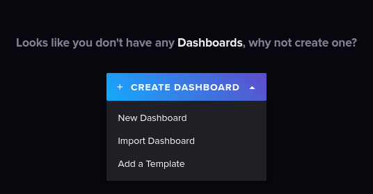
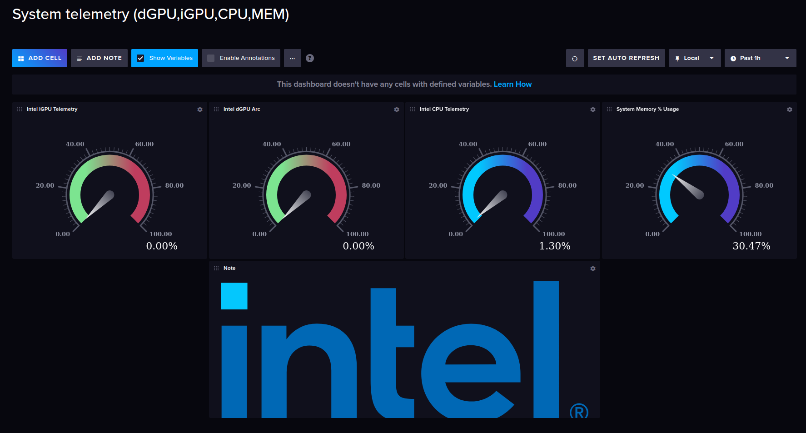

Setup Telemetry
Build Telegraf docker image
make build-telegraf
Run InfluxDB and Telegraf
Set password for InfluxDB as env variable in command line:
Note: Password must be at least 8 characters in length.
make INFLUXPASS=password run-telegraf
Start Dashboard:
Open a browser to http://127.0.0.1:8086 and login using username: telegraf and the password you set previously.
Import Template
Click on "Build a Dashboard", then "Import dashboard" and select the file intel_core_and_igpu_telemetry.json under telegraf folder.

Run Dashboard
